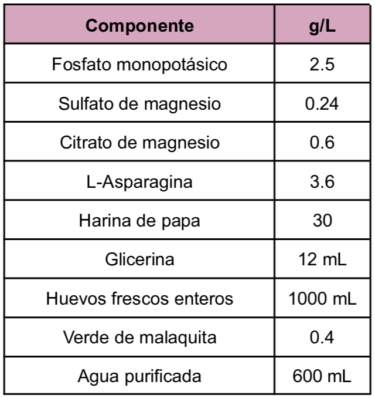
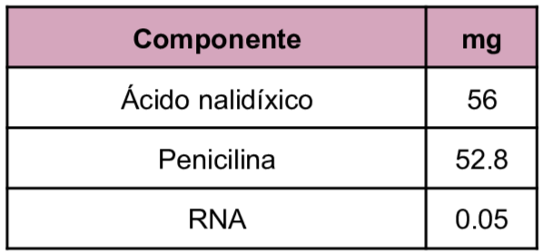
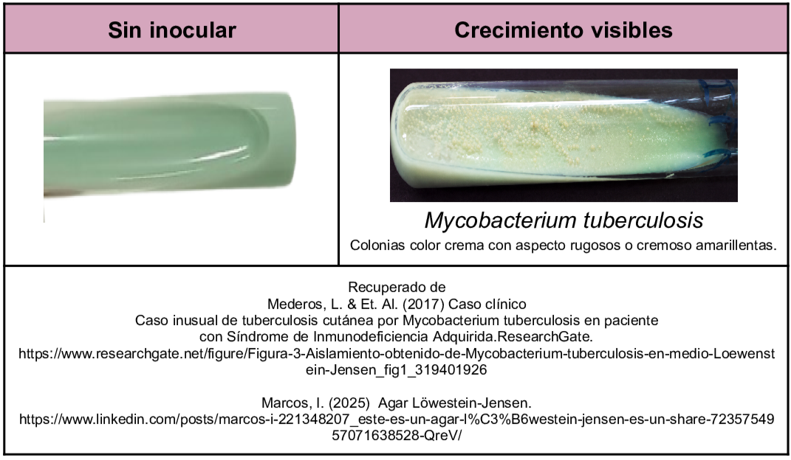

Medio selectivo utilizado en el cultivo y aislamiento de micobacterias en especial para
Mycobacterium tuberculosis
en muestras clínicas. En la composición del medio se tiene mezcla de huevos los cuales constituyen un soporte para el crecimiento de micobacterias ya que proporciona proteínas y ácidos grasos necesarios en su metabolismo, el verde de malaquita inhibe a la flora acompañante, por su parte la glicerina estimula el crecimiento de
Mycobacterium tuberculosis
e inhibe
Mycobacterium bovis.
Composición

En caso del medio Löwenstein-Jensen modificado (utilizado para aumentar la selectividad) se añade a la composición:

Resultados Posibles
Colonias color crema, rugosas o cremosas y amarillentas corresponden presuntivamente a
Mycobacterium tuberculosis
para su confirmación se realiza un extendido y se lleva a cabo la tinción de Ziehl-Neelsen.

Referencias
Britania (2022) Lowenstein Jensen Medio. https://britanialab.com/storage/productos/lj-m-ft-compressed-MXpen.pdf
Aryal,S. (2022)Lowenstein Jensen (LJ) Media- Composition, Principle, Preparation, Results, Uses. https://microbenotes.com/lowenstein-jensen-lj-media/